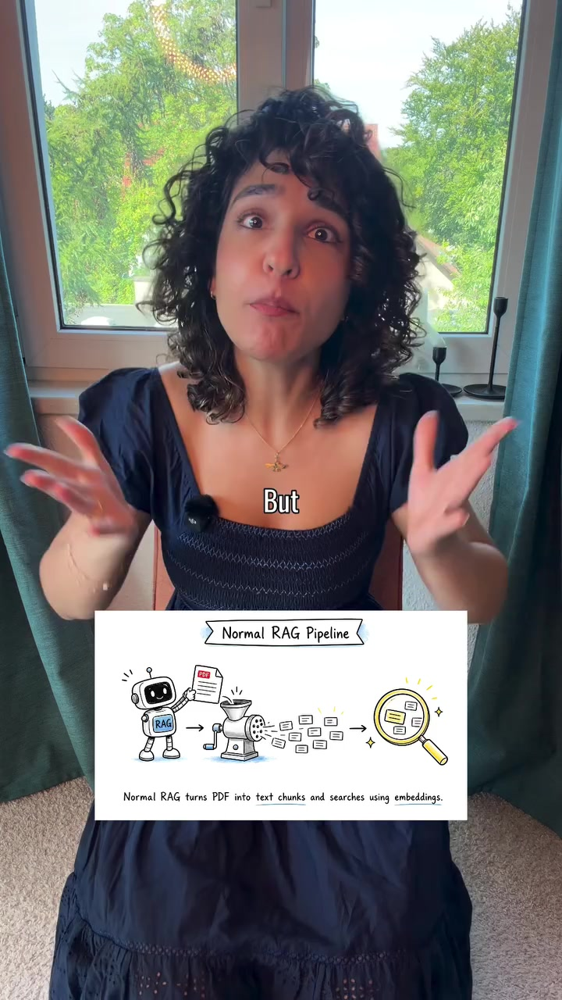
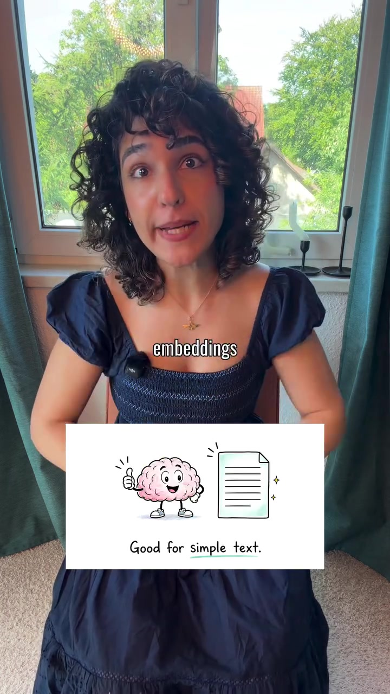
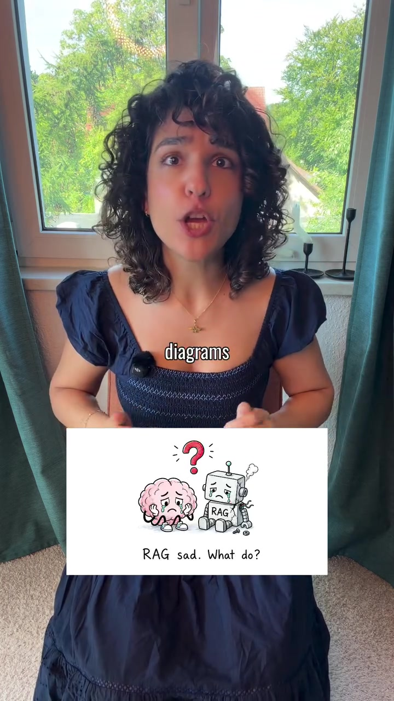
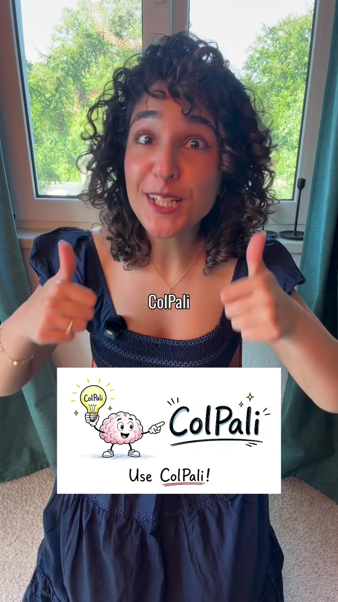

AI · RAG-Architecture
ColPali: Multi-Vector Vision-Language Retrieval for Complex PDFs, Tables & Charts
Traditional Retrieval-Augmented Generation (RAG) fundamentally fails on visually rich enterprise documents (financial reports, medical scans, architectural blueprints, multi-column research papers). Standard text chunking and OCR strip critical tabular coordinates, graphical relationships, and typographical hierarchies. ColPali solves this by abandoning text parsing: it passes the entire PDF page as an image through a Vision-Language Model (PaliGemma) and produces multi-vector patch embeddings using ColBERT-style late interaction.
Visual Reference Stills




Architectural Paradigm Comparison
Traditional OCR & Text RAG
- Ingestion: PyPDF / Tesseract strips tables into mangled linear text.
- Loss of Topology: Infographics, axis labels, pie charts, and spatial column relationships are permanently destroyed.
- Representation: Dense single-vector per chunk (e.g. 1536d) suffers semantic compression loss.
- Retrieval Failure: Queries asking "What was Q3 EBITDA in the summary table?" fail because tabular coordinates dissolved into sequential tokens.
ColPali Vision-Language Retrieval
- Ingestion: Render PDF page directly as a 448x448 or 896x896 raster image. Zero OCR step required.
- Vision Transformer: SigLIP / PaliGemma visual encoder processes image patches (e.g., 1024 visual tokens per page).
- Multi-Vector Representation: Every visual patch maintains its own 128d projection vector.
- Late Interaction (MaxSim): Query tokens align dynamically with individual visual image patches (matching headers, chart labels, or table cells).
How ColPali Late Interaction Works
A document page is segmented into grid patches. PaliGemma's transformer attention maps visual layout, typography, borders, and color cues simultaneously with semantic words.
Given query tokens Q = {q_1, q_2, ... q_m} and page patch vectors D = {d_1, d_2, ... d_n}, the relevance score is computed as:
Score(Q, D) = ∑i maxj ( qi • dj )
Each query token finds its single most relevant visual patch on the document page, allowing granular pinpointing of single numbers in dense balance sheets.
ColPali matches or outperforms complex multi-stage pipelines (OCR + LayoutLM + Text Embedding + Cross-Encoder Re-ranker) while operating ~10x faster and eliminating brittle OCR parsing code entirely.